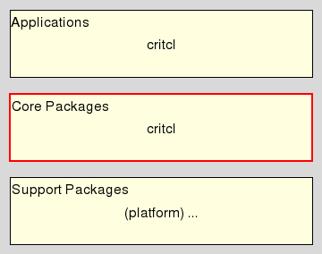

critcl::class - CriTcl Utilities: C Classes
Welcome to the C Runtime In Tcl, CriTcl for short, a system to build C extension packages for Tcl on the fly, from C code embedded within Tcl scripts, for all who wish to make their code go faster.
This document is the reference manpage for the critcl::class package. This package provides convenience commands for advanced functionality built on top of the core. Namely, the specification of classes and objects without having to write all the required boilerplate, only the methods themselves, essentially. Its intended audience are mainly developers wishing to write Tcl packages with embedded C code.
This package resides in the Core Package Layer of CriTcl.

This command defines a new class name, where name is the name of the Tcl command representing the class. The script provides the specification of the class, i.e. information about included headers, instance data, methods, etc. The section Class Specification API below explains the commands available to the developer.
This command specifies the C code for the construction, i.e. allocation of instance structures. While technically optional in practice it should be specified.
The C code in body has to contain the statements initializing the instance structure, which is accessible through the variable instance. It further has access to the variable interp, a pointer to the Tcl interpreter the command is created in, enabling it to set an error message should the construction fail. The C code in postbody is then responsible for connecting the instance with the created Tcl command, accessible through the variable cmd, of type Tcl_Command.
If the instance structure is specified as a series of fields then the system will automatically generate code to allocate the instance structure. It will also provide a label error: to jump to in case of a failure, at which point the instance will be cleaned up and NULL returned as the result of the constructor, to notify the calling environment of that failure.
Otherwise, i.e. for an external type all of this, i.e. allocation, possible deallocation on failure, etc. will be the responsibility of the body and writer of the class.
This command specifies the C code for the destruction, i.e. release of instance structures. While technically optional in practice it should be specified.
The body has to contain the code releasing the contents of the instance structure, accessible through the variable instance.
If the instance structure is specified as a series of fields then the system will automatically generate code to free the instance structure (not the fields) after the body was run. It will further generate a destroy method too, owing to its knowledge of the instance structure, i.e. the existence of field cmd. Otherwise, i.e. for an external type it is the responsibility of the body to free the structure itself as well.
This command specifies a field in the instance structure of the class, naming it, the C type used, and possibly a comment. Multiple fields can be specified, and are saved in the order specified. This specification is mutually exclusive with the use of an external C type for the instance structure.
Note that for this way of declaring the instance data the system will automatically generate code for the basic allocation and release of the instance structure. The constructor and destructor C code supplied by the user has to deal only with the specified fields.
Note further that in this case a predefined field cmd of type Tcl_Command is present, to allow the association of instance structure and instance command. And the postbody will implictly contain the assignment
instance->cmd = cmd;
This command specified the path of a header file to include within the code generated for the class. This is separate from the support because these include will be at the very beginning of the generated code to allow the use of the import declarations within the instance type, etc.
This command specifies a method and the C code implementing it. The body has access to the variables
This variant of the command above defines a method of the class as implemented by the external function funname, i.e. which is declared outside of the class code itself.
It is assumed that the first four arguments of that function represent the parameters
Any additional arguments specified will be added after these and are passed into the C code as is, i.e. are considered to be C expressions.
Note that the system automatically generates a method destroy when the instance structure is specified as a series of fields.
This command specifies the supporting C code, i.e. any definitions (types, functions, etc.) needed by the whole class. It is optional, i.e. if the class doesn't need supporting code, this command can be left out of the specification.
This command specifies the name of an external C type, i.e. found outside of the class definition itself, for the instance structure. This specification is mutually exclusive with the declaration of the structure as a series of fields within the class definition itself.
It is the responsibility of the constructor and destructor C code to allocate and release this structure, and its contents.
The example shown below is the specification of queue data structure, with most of the method implementations and support code omitted to keep the size down.
The full implementation can be found in the directory "examples/queue" of the critcl source distribution/repository.
package require Tcl 8.4
package require critcl 3.1
critcl::buildrequirement {
package require critcl::class ; # DSL, easy spec of Tcl class/object commands.
}
critcl::cheaders util.h
critcl::class::def ::queuec {
include util.h
field Tcl_Obj* unget {List object unget elements}
field Tcl_Obj* queue {List object holding the main queue}
field Tcl_Obj* append {List object holding new elements}
field int at {Index of next element to return from the main queue}
constructor {
instance->at = 0;
instance->unget = Tcl_NewListObj (0,NULL);
instance->queue = Tcl_NewListObj (0,NULL);
instance->append = Tcl_NewListObj (0,NULL);
Tcl_IncrRefCount (instance->unget);
Tcl_IncrRefCount (instance->queue);
Tcl_IncrRefCount (instance->append);
}
destructor {
Tcl_DecrRefCount (instance->unget);
Tcl_DecrRefCount (instance->queue);
Tcl_DecrRefCount (instance->append);
}
support {... queue_peekget, queue_size, etc.}
mdef clear {...}
mdef destroy {...}
mdef get as queue_peekget 1
mdef peek as queue_peekget 0
mdef put {...}
mdef size {
/* Syntax: queue size
* [0] [1]
*/
if ((objc != 2)) {
Tcl_WrongNumArgs (interp, 2, objv, NULL);
return TCL_ERROR;
}
Tcl_SetObjResult (interp, Tcl_NewIntObj (queue_size (instance, NULL, NULL, NULL)));
return TCL_OK;
}
mdef unget {...}
}
package provide queuec 1
Andreas Kupries
This document, and the package it describes, will undoubtedly contain bugs and other problems. Please report such at https://github.com/jcw/critcl. Please also report any ideas for enhancements you may have for either package and/or documentation.
C class, C code, C instance, C object, Embedded C Code, code generator, compile & run, compiler, dynamic code generation, dynamic compilation, generate package, linker, on demand compilation, on-the-fly compilation
Glueing/Embedded C code
Copyright © 2011-2012 Andreas Kupries